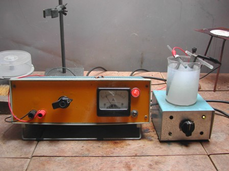
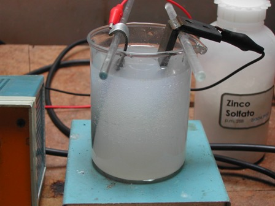
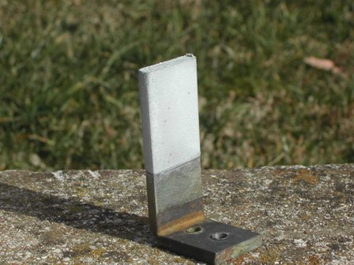

Eugenio Bertorelle, classe 1913, fu tre cose insieme: un chimico, un professore ed un artista.
Insegnò in vari istituti tecnici ed all'università di Milano, ed ebbe sempre la passione innata per l'elettrochimica e le tecniche galvaniche, che coltivò per tutta la vita e che gli diede ampi riconoscimenti in accademie nazionali e internazionali.
Era così tanto innamorato dell'elettrochimica da trasferire questa passione in ambito artistico e da fargli produrre nel suo laboratorio di casa opere e sculture "elettrolitiche", apprezzate e ricercate dai collezionisti.
Una dozzina di anni fa, dopo la sua morte, fu allestita a Varese una mostra il cui titolo è tutto un programma: "Germinazioni galvaniche"!
Bertorelle è stato una dei padri della tecnologia galvanica nel nostro paese e soprattutto è stato l'autore del ponderoso "Trattato di Galvanotecnica" (edito da Hoepli), una vera bibbia per i professionisti in questo settore.
Visto che volevo fare una prova di zincatura, la faccio rendendo il mio microscopico omaggio al nostro Autore mettendo in pratica una formulazione presa dal suo librone, che è la seguente:
-solfato di zinco ZnSO4 300 g/l
-cloruro di ammonio NH4Cl 40 g/l
-solfato di alluminio Al2 (SO4)3 30 g/l
-acetato di sodio CH3COONa 15 g/l
-acido solforico H2SO4 quanto basta a portare il pH a 4
-densità di corrente (non tensione!) da 1 a 5 A/dm2
-temperatura 20-30°
Ho preparato la soluzione dei vari sali in 200 ml di acqua e predisposto la celletta elettrolitica.
Pur avendo a disposizione alimentatori stabilizzati e regolabili in tensione e corrente, ho usato il semplicissimo alimentatore descritto la volta scorsa regolando la densità di corrente con l'ausilio di una sola banalissima resistenza, come già detto.
L'anodo era una lamina di zinco ed il catodo un elemento in ferro della superficie (immersa) di 16 cm2
Come il solito, è di fondamentale importanza che il metallo da ricoprire sia perfettamente pulito e quindi ho trattato il pezzo prima con carta vetrata per rimuovere lo strato di ossido, poi con soluzione diluita di HCl ed infine risciacquato bene, senza mai toccare con le mani la superficie pulita.
Ho volutamente provato la deposizione al limite superiore della corrente consigliata, regolando il reostato dell'alimentatore a 800 mA, corrispondenti ad una densità di corrente di 5 A/dm2 ed elettrolizzato per circa 45 minuti, sotto costante agitazione.
La zincatura è risultata molto buona e compatta anche se leggermente ruvida al tatto, sicuramente per la corrente alta e per la temperatura del mio lab, che era viceversa decisamente bassa.
Con una passatina di carta vetrata il deposito, assolutamente aderente, è diventato bello lucido.
Ecco la cronaca fotografica dell'esperimento:



Con la medesima soluzione effettuerò altre due prove in condizioni diverse e ne parlerò a suo tempo:
- aumentando un po' la temperatura e diminuendo significativamente la densità di corrente (variando il tempo in proporzione)
- infine, per fugare ogni dubbio riguardo l'uscita non filtrata dell'alimentatore, conducendo l'dentica elettrodeposizione con corrente perfettamente continua e quindi del tutto esente da ripple (batteria in tampone con pannello fotovoltaico).
2 commenti